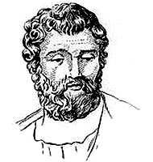

May 3, 2018
zeno's squats
Zeno of Elea was a pre-Socratic Greek philosopher of southern Italy. He is best known for his paradox describing motion to be impossible. Take any distance between two points, divide it in two, and always travel this halved distance. You will never reach your destination.
Take 15 deep breaths.
Perform half as many reps as the first set
Take 15 deep breaths.
Perform half as many reps as the second set
Repeat until you end up at 1 rep.
Strip off 50-90lbs
Perform as many reps as the first set
I was inspired by this post, and have been incorporating hellish finishers to my workouts.